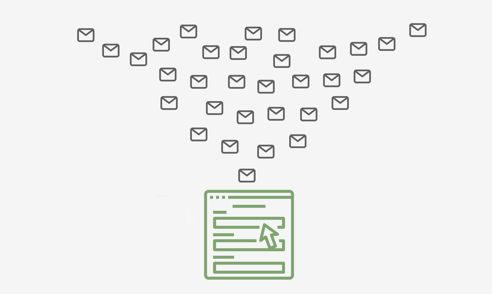
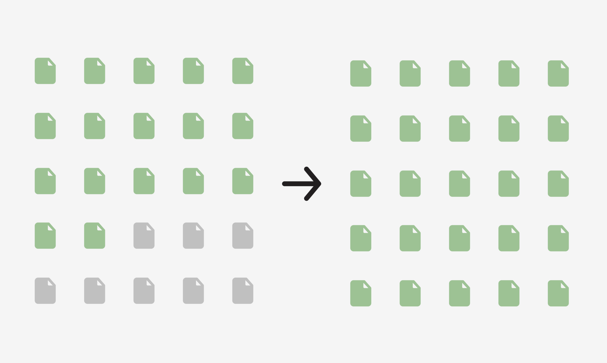
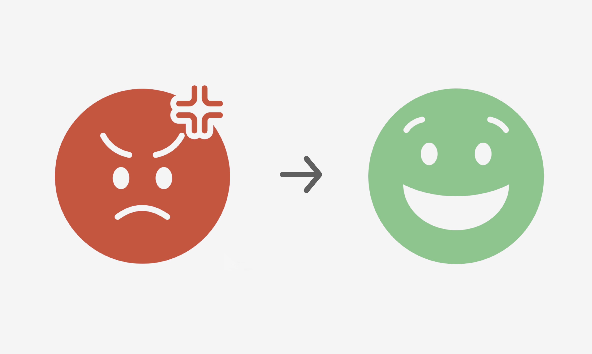
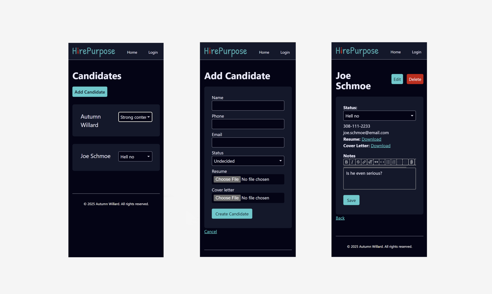
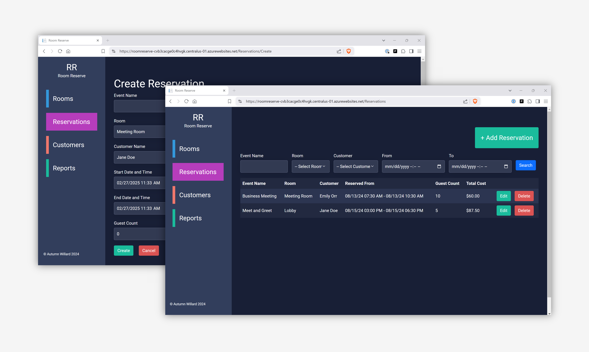

Hi, I'm Autumn!
I take confusing software and processes, make sense of them, and then improve them.
Usually that means talking to users, writing code, and shipping solutions. Sometimes it saves organizations $175K. Sometimes it just makes people's day a little less frustrating.
Looking for a team that needs someone who can see problems clearly and solve them effectively.
Think we might be a good fit? Reach out!




Room Reserve
Hourly rental businesses were stuck with hotel software that didn't fit. Built a .NET solution from user research through deployment. Automated conflict detection so double-bookings became impossible.
User Research | Figma | C# | ASP.NET MVC | SQL | xUnit Testing | System Architecture | Docker | GitHub